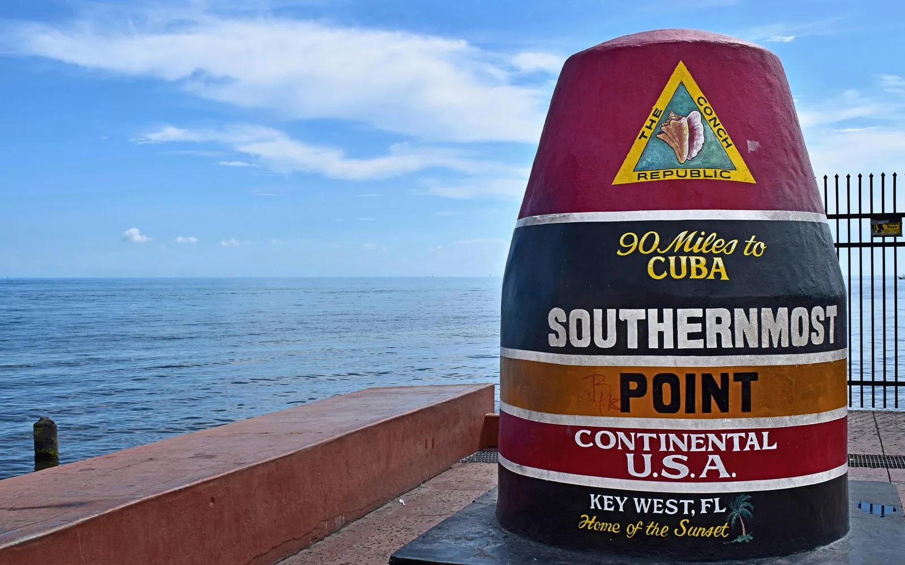

Em Key West, as casas à venda incluem as casinhas históricas de madeira ("Conch houses") em Old Town, casas em Casa Marina e Truman Annex e imóveis mais simples e apartamentos em New Town. É um dos mercados mais caros da Flórida, o aluguel por temporada é bem limitado e a ilha fica no caminho dos furacões do Atlântico, então o seguro pesa muito. O escritório da Royal Star Corp fica em Coral Springs, e o Rui Cunha, corretor brasileiro, atende clientes em toda a Flórida, inclusive nas Keys.
Como é morar em Key West
Key West é uma pequena cidade-ilha no fim das Florida Keys, no condado de Monroe. O escritório de estatísticas do estado estimou 26.524 habitantes em abril de 2025, de um total de 84.705 em todo o condado (Florida EDR). Terreno é pouco e construção nova também: a prefeitura controla quantas casas novas podem ser construídas para manter o tempo de evacuação de 24 horas em caso de furacão (Prefeitura de Key West).
Para brasileiros
Não encontramos uma fonte confiável sobre uma comunidade brasileira em Key West, então não vamos inventar. Se o plano é casa de férias com renda de aluguel por temporada, leia a parte de aluguel abaixo antes de fazer qualquer conta. Se você mora no Brasil, veja também como investir na Flórida.
Bairros
Um guia local descreve as principais áreas da ilha (Old Town Trolley Tours):
- Old Town. O coração histórico da ilha, com arquitetura da virada do século e os pontos turísticos.
- Bahama Village. Bairro de raízes bahamenses, com casas coloridas no estilo "shotgun".
- Truman Annex. Área histórica onde o presidente Truman passava os invernos.
- Casa Marina. Bairro residencial com ruas arborizadas, que leva o nome do hotel de Henry Flagler, de 1920.
- New Town. A parte da ilha construída em meados do século 20, com comércio e áreas de lazer do dia a dia.
Regras do distrito histórico. Obras na parte externa de imóveis no distrito histórico passam pela comissão de revisão arquitetônica da prefeitura (HARC) (Prefeitura de Key West). Se pensa em reformar, conte com esse prazo.
Mercado imobiliário: preços altos
Segundo a Momentum Research, com base no MLS das Florida Keys, 309 imóveis foram vendidos no CEP 33040 de Key West nos 12 meses até 20 de setembro de 2026, com mediana de cerca de US$ 908 mil, uns 4,3% abaixo do período anterior (Momentum). Para comparar, a mediana de casas no estado todo foi de US$ 415 mil em agosto de 2026 (Florida Realtors).
O CEP 33040 cobre também ilhas vizinhas fora da cidade, e o número mistura apartamentos e casas. Peça ao Rui uma comparação atualizada para o tipo de imóvel que você procura.
Aluguel por temporada (Airbnb): leia antes de comprar
Em Key West, alugar para turistas é restrito:
- Aluguel por menos de 30 dias exige licença. A prefeitura considera hospedagem temporária qualquer imóvel alugado por menos de 30 dias ou um mês do calendário (Prefeitura de Key West).
- Novas licenças estão limitadas desde 2002 (The Blue Paper, 2019). As licenças existentes ficam ligadas a imóveis específicos e só passam para outro endereço com aprovação da prefeitura; em outubro de 2025, por exemplo, o Planning Board analisou a transferência de uma licença entre dois endereços (Planning Board de Key West).
Na prática: se o imóvel ainda não tem licença, conte com aluguel mensal ou mais longo. Confirme a licença e o zoneamento antes de colocar renda de aluguel na conta, e desconfie de anúncio que promete aluguel por diária sem comprovar.
Cuidados práticos: furacão, enchente e seguro
Histórico de furacões. Segundo o Centro Nacional de Furacões (NHC), o Irma tocou terra perto de Cudjoe Key, nas Lower Keys, em setembro de 2017, na categoria 4. A água subiu de 2 a 4 pés (0,6 a 1,2 m) acima do solo de Cudjoe Key até Key West, e nas Middle e Lower Keys a maioria das casas ficou muito danificada ou destruída (NHC, relatório do Irma). Mesmo furacões que atingem a costa do Golfo afetam as Keys: em 2024, o Helene e o Milton trouxeram de 1 a 2 pés de maré de tempestade às Keys (NHC, Helene; NHC, Milton).
Seguro contra enchente. Quando a nova forma de cálculo da FEMA (Risk Rating 2.0) entrou em vigor em 2022, um grupo local estimou aumentos futuros de US$ 3.200 por ano, em média, para apólices do condado de Monroe, enquanto as projeções da própria FEMA mostravam aumentos anuais bem menores para a maioria dos imóveis (Key West Citizen via InsuranceNewsNet, abril de 2022).
Antes da oferta:
- Confira a zona de enchente e a elevação do imóvel, e pergunte sobre danos de tempestades passadas e o que foi consertado.
- Faça cotações reais de seguro residencial, de vento e contra enchente. O órgão regulador de seguros da Flórida calcula o prêmio médio do seguro residencial no estado em cerca de US$ 3.736 por ano (Florida Realtors, setembro de 2026); numa casa antiga numa ilha, o valor pode ser maior.
- Quem tem seguro pela Citizens, a seguradora estadual, vai precisar de cobertura contra enchente, exigência que entra aos poucos até 2027 (News4JAX).
Apartamentos. Prédios de três andares ou mais precisam de inspeções periódicas e de um estudo de reservas estruturais com reservas financiadas (SB 154, 2023; Rimkus). Peça o estudo de reservas, o orçamento, as regras de aluguel e o histórico de cobranças extras.
Impostos. A isenção homestead vale só para quem mora no imóvel como residência principal. Casa de férias e quem mora no Brasil não têm direito. Converse com um contador.
Escolas e como se locomover
Key West é atendida pelo distrito escolar do condado de Monroe; confirme a escola de cada endereço e consulte as notas no site do Departamento de Educação da Flórida. A ilha é compacta, e a única estrada para o continente é a Overseas Highway (US 1), o que faz diferença quando há ordem de evacuação.
Comprar com o Rui em Key West
O escritório do Rui fica em Coral Springs, e ele atende clientes em toda a Flórida. Ele trabalha com imóveis na Flórida desde 2003, como mortgage broker, broker e General Contractor licenciado, o que ajuda a avaliar uma casa antiga de madeira, um reparo de furacão ou uma reforma que precisa de aprovação do distrito histórico. Ele ajuda você a comprar casa na Flórida, a entender o financiamento com ITIN ou a investir na Flórida. Faça as contas na calculadora de financiamento, com seguro incluído, e compare com Naples.
Perguntas frequentes
Posso alugar minha casa em Key West no Airbnb?
Só se o imóvel tiver licença de aluguel temporário (transient license). Key West exige licença para aluguéis de menos de 30 dias, e novas licenças estão limitadas desde 2002, então a maioria das casas só pode ser alugada por mês ou mais. Confirme a licença antes de comprar.
Key West é muito cara?
Segundo a Momentum Research, com base no MLS das Keys, a mediana foi de cerca de US$ 908 mil no CEP 33040 nos 12 meses até setembro de 2026 (todos os tipos de imóvel, então não é comparável direto com a mediana estadual de casas, de US$ 415 mil, mas fica muito acima dela).
O seguro contra enchente em Key West é caro?
Pode ser. O valor depende da elevação e da zona de enchente do imóvel. Peça o certificado de elevação e cotações reais antes de assinar.
Dá para comprar casa em Key West sem Social Security?
Muitos compradores usam o financiamento com ITIN, sempre sujeito à aprovação do banco. Veja o guia de financiamento com ITIN ou fale com o Rui.
Fale com o Rui
Sonhando com Key West? Peça ao Rui para checar as regras de aluguel, a zona de enchente e as vendas recentes antes de se apaixonar por uma casa.